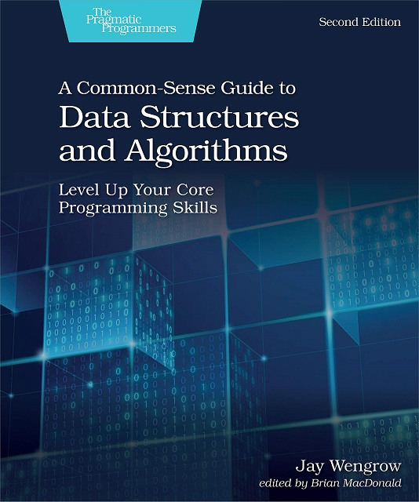

Course Description
This is a yearlong course that gives advanced students the strong foundation needed to build complex applications using object-oriented principles. This course covers the design and implementation of data structures including arrays, stacks, queues, linked lists, binary trees, heaps, balanced trees (e.g., AVL-trees) and graphs. Students are also introduced to the software design process.
Learning Resources
Textbook

A Common-Sense Guide to Data Structures and Algorithms, Second Edition:
Level Up Your Core Programming Skills
(Wengrow)
Level Up Your Core Programming Skills
(Wengrow)
Office Hours
You can usually find me in either my office (902) or the lab (816).
- Tuesday office hours: 816
- Before school (M-F): 816
- Lunch (M-F): 816
- And by appointment
Grading and Assessments
This course will use a range of assessments. These include written assessments and labs that all are designed to measure understanding and a student’s ability to apply their knowledge.
Learning Goals
- Conceptual Understanding (45%)
- Ability to demonstrate knowledge of course concepts
- Technical Application (45%)
- Ability to problem solve
- Ability to write Java code
- Communication (10%)
- Ability to communicate technical concepts
- Ability to write readable code